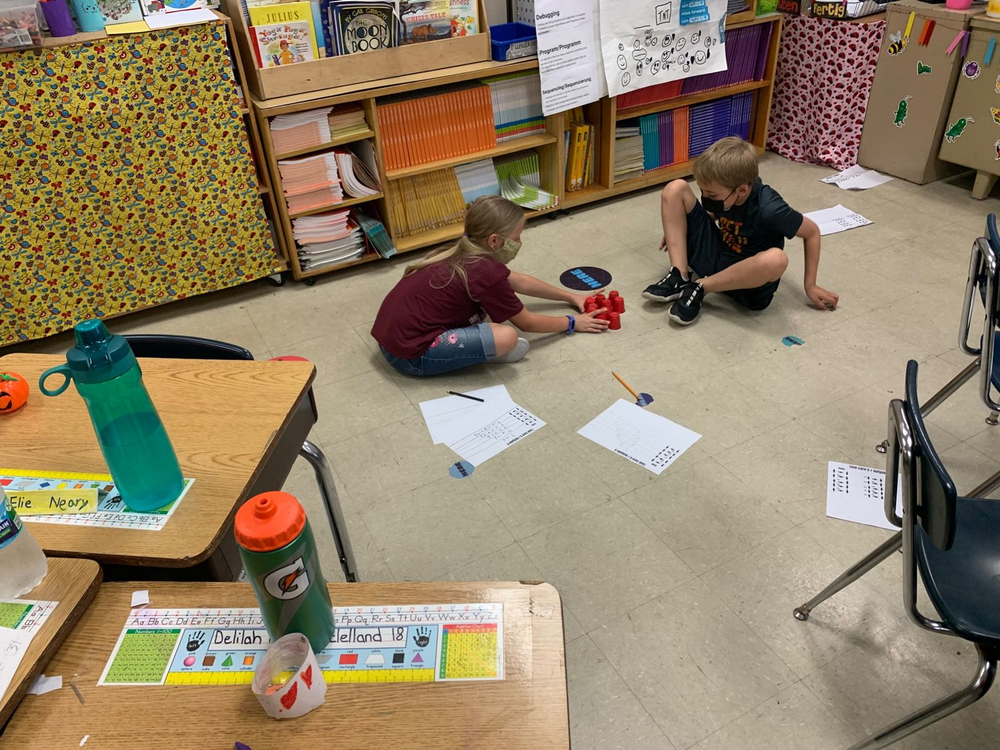
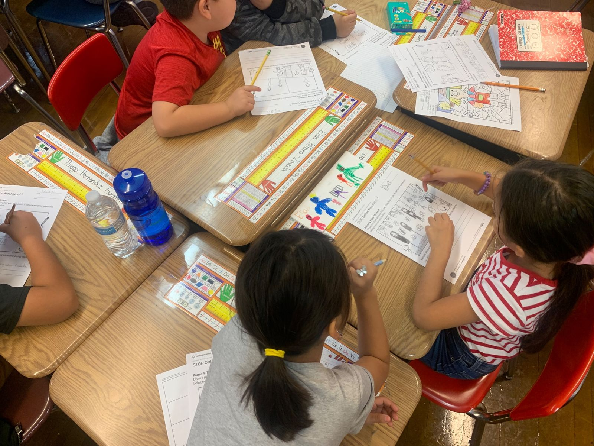
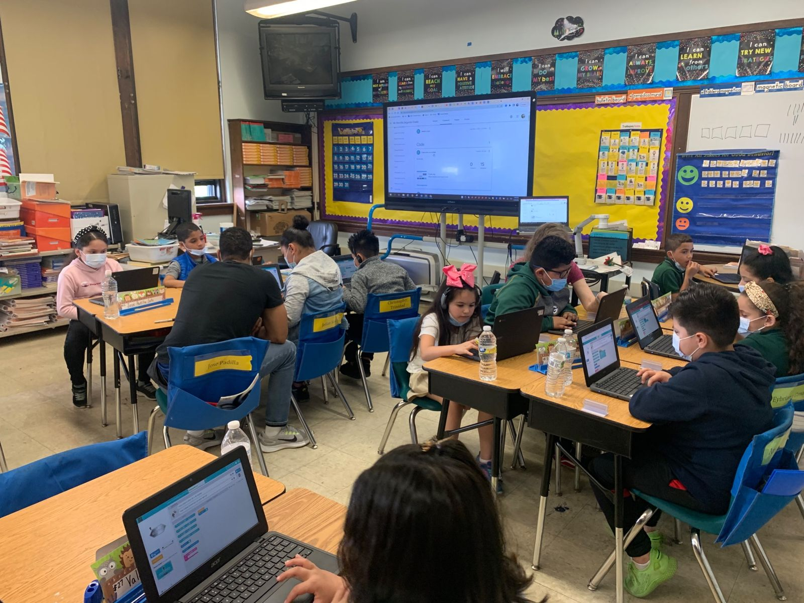
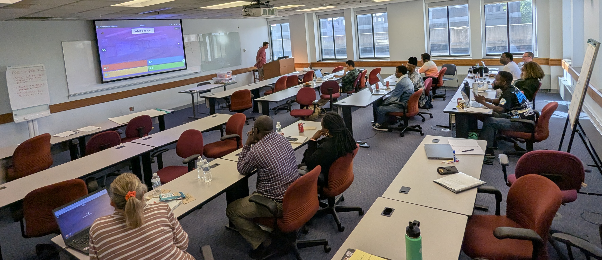

PK–5
Elementary School
Hands-on, physical computing and CS integrated into the subjects you already teach.
Elementary programs
Preparing the Upper Midwest for Pathways in Computer Science (PUMP-CS) is a collaborative community of educators, researchers, and tech advocates dedicated to ensuring equitable access to high-quality computing education for every student in Wisconsin.
Gallery
Sixteen years of PUMP-CS summer cohorts, teacher workshops, and the Wisconsin classrooms they reach.
Professional learning
Since 2010, PUMP-CS has prepared Wisconsin teachers from kindergarten through AP. Find the programs for your classroom.

Hands-on, physical computing and CS integrated into the subjects you already teach.
Elementary programs
CS Discoveries, CS inside STEM, and regional cohorts across Wisconsin.
Middle school programs
The 2026 CS Summer PD at a glance
Past PUMP-CS CS Summer PD events have run up to five parallel tracks. Dates and location for will be announced.
Since 2010
Explore
2010 to today
From a 2010 coalition of teachers, universities, and the state to Wisconsin's first K–12 CS standards and four NSF awards.
Read the historyProject director
Professor and Chair of Computer Science at Marquette, and the leader of PUMP-CS for sixteen years.
Meet Dr. BrylowWho makes it possible
CSTA Wisconsin-Dairyland, the CSforWI ECEP Alliance, Milwaukee Public Schools, and the funders behind past programs.
See our partnersProposed for the 2027–2028 academic year. Dates, location, and the application window will be announced on the Summer PD page.
Reach the PUMP-CS team on the contact page.

PUMP-CS is a project of the Department of Computer Science at Marquette University, supporting Wisconsin K–12 computer science teachers since 2010.